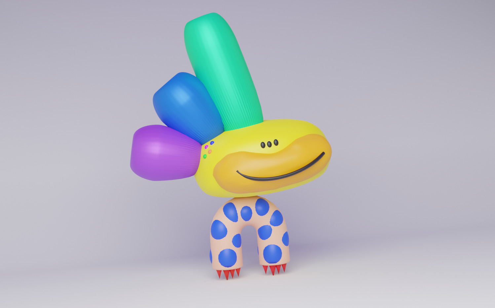
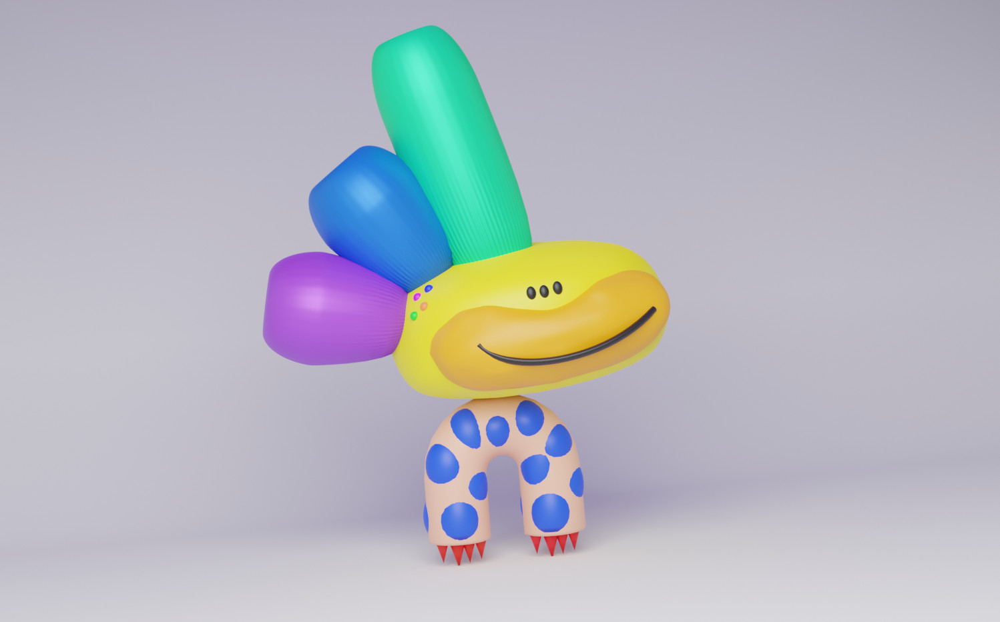

EXPERIMENTING WITH BLENDER
In class we was recommended to use BLENDER so I tried the program with a simple character I design before in 2D. So I started with the tutorials to develop it.
MAKING THE PLAN TO DEVELOP THE CHARACTER
EXPLODE THE MODEL IN GEOMETRICS PARTS BEFORE START

BLENDER HANDS-ON
REDO ONCE AND AGAIN, UNTIL YOU GET USED TO
As I was saying at the beginning, it seems an easy program, BUT, I never have used before and I had no idea where to click, so it was challenging. It takes like 2 hrs to develop it; but like 2 hrs more to make the mouth, and I think it is still looking weird.


PUTTING SOME COLORS, LIGHTS AND CAMERA
AND RENDER IT
 

NEXT STEP::: MAKE IT MOVE
NOT BLENDER
The next step was try to move with and "armadure", but probably I will require more hours to undertand how to. The spite of the fact it didn't work, suddenly appeared this online site to make move your characters SKETCH.METADEMOLAB.COM.
It didn´t work, but it was fun.
The program use humanized characters, because of that it didn´t recognize this character. At the beginning I thought that it was because it was a 3D model, thats why I put the 2D drawing, but it became worst. The interesting thing was that every time I restarted the program it generated different outputs.